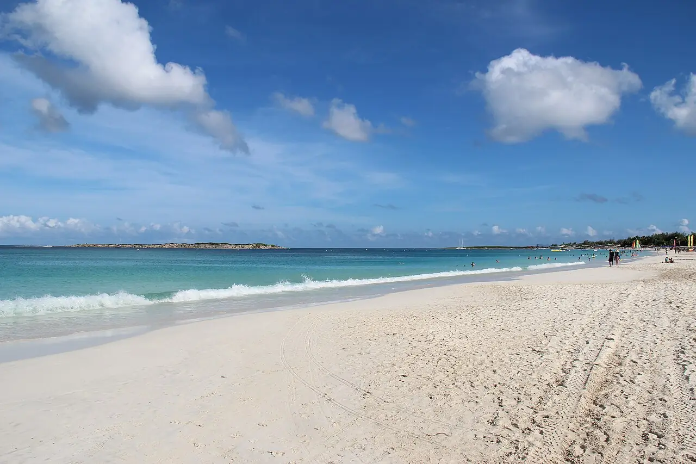

Baie Orientale
Côte est, Saint-Martin · kitesurf, windsurf, baignade, snorkeling

Grande plage de sable blanc sur la côte au vent de la partie française de Saint-Martin, dans la réserve naturelle. Les alizés en font un spot de kite et de planche, tandis que les îlets voisins se découvrent au masque.
- Lieu
- Côte est, Saint-Martin
- Niveau
- Intermédiaire
- Activités
- kitesurf, windsurf, baignade, snorkeling
- Type d'eau
- Mer / océan
- Coordonnées
- 18.09, -63.02 (position approximative du secteur)
Dangers à connaître
- Récif corallien au large : attention aux chutes en navigation.
- Jet-skis et bateaux dans la baie.
- Alizés forts et rafaleux.
Le conseil d'Ocean Buddy
Navigue dans les zones dédiées aux sports de glisse, loin des baigneurs, et demande aux écoles où passe la barrière de corail.
Ouvrir dans Ocean Buddy Télécharger sur l'App Store
Source : Fiche Ocean Buddy · septembre 2026 · à vérifier localement.